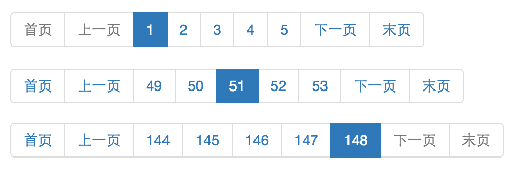

<!DOCTYPE HTML>
<html>
<head><meta name="generator" content="Hexo 3.9.0">
  <meta charset="utf-8">
  <meta http-equiv="X-UA-Compatible" content="IE=edge">
  <meta name="apple-mobile-web-app-capable" content="yes">
  <meta name="apple-mobile-web-app-status-bar-style" content="black">
  <meta name="google-site-verification" content>
  
  <title>【Spring】基于Spring Data JPA的分页组件</title>
  <meta name="author" content="Emac">
   <meta name="description" content="分页的基本模型做Web应用开发，或早或晚都会涉及到分页。按模型划分，分页包含页码（page），大小（size）和总条数（count），页码和大小面向的是前端页面，而总条数来自后端服务。按表现形式，可分为显式分页和隐式分页（比如上拉加载），显示分页一般用于PC端，而隐式分页一般用于Mobile端。按实">
  

  <meta property="og:title" content="【Spring】基于Spring Data JPA的分页组件">
  <meta name="viewport" content="width=device-width, initial-scale=1, maximum-scale=1">
  <meta property="og:site_name" content="Emac">
 <meta property="og:image" content="undefined">
  
  <link href="/apple-touch-icon-precomposed.png" sizes="180x180" rel="apple-touch-icon-precomposed">
  <link rel="alternate" href="/atom.xml" title="Emac" type="application/atom+xml">
  <link rel="stylesheet" href="//cdn.bootcss.com/bootstrap/3.3.6/css/bootstrap.min.css">
  <link rel="stylesheet" href="//cdn.bootcss.com/font-awesome/4.5.0/css/font-awesome.min.css">
  <link rel="stylesheet" href="/css/m.min.css">
  <link rel="icon" type="image/x-icon" href="/favicon.ico">
</head>
</html>
<body>
  <div id='wx_pic' style='display:none;'></div>
  <div id="main">
    <div class="behind">
      <div class="back">
        <a href="/" class="black-color"><i class="fa fa-times" aria-hidden="true"></i></a>
      </div>
      <div class="description">
        &nbsp;拾贝
      </div>
    </div>
    <div class="container">
      

  <article class="standard post">
    <div class="title">
      
  
    <h1 class="page-title center">
        【Spring】基于Spring Data JPA的分页组件
    </h1>
  


    </div>
    <div class="meta center">
      
<time datetime="2016-04-09T16:00:00.000Z">
  <i class="fa fa-calendar"></i>&nbsp;
  2016-04-10
</time>


    
    &nbsp;
    <i class="fa fa-tag"></i>&nbsp;
    <a href="/categories/backend/">backend</a>


    
    &nbsp;
    <i class="fa fa-tag"></i>&nbsp;
    <a href="/tags/原创/">原创</a>·<a href="/tags/Spring/">Spring</a>


    </div>
    <hr>
    <div class="picture-container">
      
    </div>
    <h2 id="分页的基本模型"><a href="#分页的基本模型" class="headerlink" title="分页的基本模型"></a>分页的基本模型</h2><p>做Web应用开发，或早或晚都会涉及到分页。按模型划分，分页包含页码（page），大小（size）和总条数（count），页码和大小面向的是前端页面，而总条数来自后端服务。按表现形式，可分为显式分页和隐式分页（比如上拉加载），显示分页一般用于PC端，而隐式分页一般用于Mobile端。按实现方式，或者由前端JS生成，或者是后端模板。</p>
<h2 id="分页的基本原理"><a href="#分页的基本原理" class="headerlink" title="分页的基本原理"></a>分页的基本原理</h2><p>一般而言，分页最终都是映射到数据库查询，在此场景下，不论何种分页框架，其基本原理都是基于SQL的<code>LIMIT [offset,] row_count</code>语法（数据库不同语法略有差别）。row_count对应的是size，而offset则是通过page*size计算得到（假设page从0计数），比如(page=1, size=10)对应(offset=10, row_count=10)。</p>
<p>介绍了分页的基本模型和原理后，接下来我结合一个基于Spring Data JPA的分页组件，阐述分页的一些实现要点。</p>
<h2 id="分页的实现要点"><a href="#分页的实现要点" class="headerlink" title="分页的实现要点"></a>分页的实现要点</h2><p>首先看一个典型的分页效果：</p>
<p></p>
<p>整个分页组件由三部分组成，首页|上一页，下一页|末页，以及中间的页码组。显然，前两部分是固定的，而页码组是随着当前页码的变化而变化。其实现要点有三个，</p>
<ul>
<li>计算页码组：首先比较页码组默认长度和总页数，取较小值为页码组最终长度（L）。然后根据当前页码（P）和总页数（T）的关系，再细分为三种情况<ul>
<li>P+L/2&lt;=L: 页码组从1开始计数，比如(P=2, T=6, L=5) -&gt; 1,2,3,4,5</li>
<li>P+L&gt;=T: 页码组从T倒数L开始计数，比如(P=5, T=6, L=5) -&gt; 2,3,4,5,6</li>
<li>其他: 页码组从P-L/2+1开始计数，比如(P=4, T=6, L=5) -&gt; 2,3,4,5,6</li>
</ul>
</li>
<li>按钮状态：首页，上一页，下一页，末页对应按钮的启用状态应随当前页码的值变化而变化，并且当前页码对应的按钮应该始终处于禁用状态。</li>
<li>页码显示：页面显示是从1开始，而数据库查询是从0开始。这一点不想清楚，边界情况就处理不好。</li>
</ul>
<p>具体实现细节，可参考我GitHub的一个示例项目，<a href="https://github.com/emac/pagination" target="_blank" rel="noopener">Pagination</a>。</p>
<h2 id="Spring-Data-JPA简介"><a href="#Spring-Data-JPA简介" class="headerlink" title="Spring Data JPA简介"></a>Spring Data JPA简介</h2><p><a href="http://projects.spring.io/spring-data-jpa/" target="_blank" rel="noopener">Spring Data JPA</a>隶属于<a href="http://projects.spring.io/spring-data/" target="_blank" rel="noopener">Spring Data</a>项目，通过一系列Spring风格的接口和注解，极大的简化了创建和开发JPA Repository的过程，同时提供了自定义查询，分页排序等高级特性的支持。</p>
<h2 id="参考"><a href="#参考" class="headerlink" title="参考"></a>参考</h2><ul>
<li><a href="http://docs.spring.io/spring-data/commons/docs/current/reference/html/" target="_blank" rel="noopener">Spring Data Commons - Reference Documentation</a></li>
</ul>


  </article>
  </script>


    </div>
  </div>
  <footer class="page-footer"><div class="clearfix">
</div>
<div class="right-foot container">
    <div class="firstrow">
        <a href="#top" >
        <i class="fa fa-arrow-right"></i>
        </a>
        © emacoo.cn 2015-2021
    </div>
    <div class="secondrow">
        <a href="https://github.com/gaoryrt/hexo-theme-pln">
        
        </a>
    </div>
</div>
<div class="clearfix">
</div>
<script async src="//busuanzi.ibruce.info/busuanzi/2.3/busuanzi.pure.mini.js"></script>
<div class="busuanzi center">
    <span id="busuanzi_container_site_pv">本站总访问量<span id="busuanzi_value_site_pv"></span>次</span>
    <span id="busuanzi_container_site_uv">本站访客数<span id="busuanzi_value_site_uv"></span>人次</span>
    <span id="busuanzi_container_page_pv">
      本文总阅读量<span id="busuanzi_value_page_pv"></span>次
    </span>
</div>
</footer>
  <script src="//cdn.bootcss.com/jquery/2.2.1/jquery.min.js"></script>
<script src="/js/search.js"></script>
<script type="text/javascript">

// comments below to disable loading animation
function revealOnScroll() {
  var scrolled = $(window).scrollTop();
  $(".excerpt, .index-title, .index-meta, p").each(function() {
    var current = $(this),
      height = $(window).outerHeight(),
      offsetTop = current.offset().top;
    (scrolled + height + 50 > offsetTop) ? current.addClass("animation"):'';
  });
}
$(window).on("scroll", revealOnScroll);
$(document).ready(revealOnScroll)

// disqus scripts


// dropdown scripts
$(".dropdown").click(function(event) {
  var current = $(this);
  event.stopPropagation();
  $(current).children(".dropdown-content")[($(current).children(".dropdown-content").hasClass("open"))?'removeClass':'addClass']("open")
});
$(document).click(function(){
    $(".dropdown-content").removeClass("open");
})

// back to top scripts
$("a[href='#top']").click(function() {
  $("html, body").animate({ scrollTop: 0 }, 500);
  return false;
});


var path = "/search.xml";
searchFunc(path, 'local-search-input', 'local-search-result');

</script>

</body>
</html>
